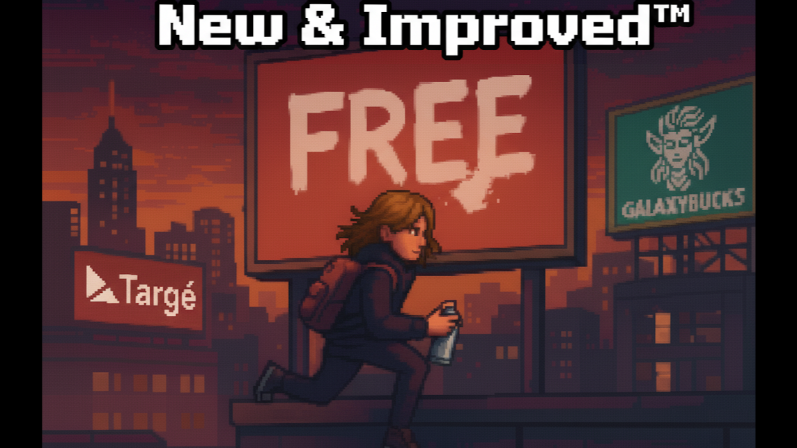

Designing a Game About Cultural Resistance: What Happens When Mechanics Take a Stance
Part of New & Improved™ — A deep dive into creating a culturally relevant video game.

Introduction
Game development is often reduced to code, engines, and systems. But before a variable is declared or a pixel is drawn on the screen, there’s the messy and sometimes grueling work of ideation. Worlds take shape in sketches, half-finished notes, restaurant napkins, and word processing documents that are often filled with more questions than answers. Even in today’s “prototype first” game dev culture, documentation remains essential. It’s the space where creative vision forms, and where developers ask not just what can we build? but what should we build?
This article kicks off a new crossover Mondev series, effectively merging my usual Wednesday games-and-culture articles with my Monday development logs. This is my first attempt at blending those two strands of writing, part design journal, part cultural critique. Over the coming weeks, I’ll be unpacking the ideation process behind New & Improved™, a 2D pixel-art side-scroller about subversion, resistance, and culture as action.
Why Make This Game at All?
New & Improved™ started with a feeling more than a feature list. I may have even had the initial idea years ago. It might have even been a dream that I woke myself up to jot down my thoughts. I wanted to make something that felt culturally present. I wanted to make something that acknowledged the world games exist in, rather than pretending it doesn’t. Not a lecture. Not a manifesto, per se, but a game that had something to say.
The challenge was obvious from the start. How do you make a game that’s politically and culturally meaningful without sacrificing playfulness? How do you keep it engaging, even joyful, while still letting it carry real weight?
That tension between fun and meaning has guided nearly every decision I’ve made during the ideation process so far. When something feels too safe, too abstract, or too eager to sand off its edges, it usually gets cut. When something feels risky but honest, it’s probably worth exploring.
Design Note
If the game doesn’t occasionally feel uncomfortable to design, it probably isn’t saying anything new.
Rethinking Action Games
I began by asking a simple question: Does the core loop of an action game have to be collecting, killing, and surviving? If we look at the general landscape of game design, the answer seems to be “yes.” Collect resources. Kill enemies. Survive. Even games claiming thoughtfulness often default to these verbs. Violence becomes the universal language, with accumulation being the universal reward.
New & Improved™ asks a different question: What if the action isn’t about dominance, but about culture? What if the core verbs are influence, subvert, and resist? This is a game where the mechanics themselves take a stance.
Enter Capitalis
Capitalis is a near-future, corporate-saturated city. Your avatar is an unnamed nonbinary activist armed with zines, stickers, graffiti, and hacked hardware. The game’s side-scrolling perspective lets players traverse streets, rooftops, alleys, and subways, emphasizing verticality and layered city spaces while keeping gameplay tight and readable.
Locals communicate through emojis – 😨 fear, ✊ solidarity, 😡 hostility – rather than legible text.
And your objective isn’t to defeat the city, it’s to chip away at corporate control, subtly shifting consciousness. Wheat-paste posters over ads, slip zines into newsstands, hack ATMs, tag billboards. Every act nudges the city toward rebellion.
Design Note
Pixel-art visuals and a side-scrolling perspective make the city legible at a glance while giving layers for vertical exploration. Combined with emoji-only NPC dialogue, this approach foregrounds action and atmosphere over literal exposition.
Mechanics as Manifesto
Progression flows through two intertwined systems. Street Cred is earned through subversive acts and spent on supplies or ally support. The Subversion Meter tracks cultural influence and changes the city’s behavior:
- Low Subversion: locals are fearful, patrols are quick to respond
- Mid Subversion: hesitant locals, minor allyship
- High Subversion: NPCs shield you, graffiti spreads organically
- Maximum: crowds block authorities, the city moves in subtle solidarity
Friction is intentional. Timing graffiti runs, coordinating flashmobs, and hacking ATMs aren’t instantaneous. Risk and delay mirror real-world resistance.
Design Note
Failure isn’t a setback. It’s part of the message. Losing everything on capture reinforces the cost of dissent and makes subversion meaningful.
Districts as Ideological Space
Every district represents a different claim on the city. But here, I’m only highlighting a selection to give a sense of how design communicates ideology:
- Midtown: contested public space, local mom and pop shops, mixed verticality
- Downtown: corporate surveillance, horizontal sprawl
- Subway (CART - Capitalis Area Rapid Transit): infrastructure, moving obstacles, timing-based stealth
- Industrial Sector: labor and production, unfinished walls as canvases
- Broadcast Tower: narrative control, the final hack
The city itself is a puzzle of power, visibility, and influence. Future articles will dive deep into all districts, unpacking how each communicates control, opportunity, and resistance through layout and mechanics.
Design Note
Districts aren’t just level design. They are ideological statements. Verticality, line-of-sight, and patrol density mirror different claims on public space.
Making Resistance Feel Real
Mini-games and quests aren’t just playful distractions. They’re acts of cultural friction:
- Distracting a newsstand proprietor to slip zines
- Transforming construction-site graffiti into messages of solidarity
- Organizing flash mobs to manipulate patrol patterns
- Hacking ATMs to broadcast ASCII art messages of resistance
Even helping a local retrieve a lost purse carries weight, earning future tactical leverage from shopkeepers.
Design Note
Subversion is messy and deliberate. Timing, coordination, and attention to environment create tension, reflecting real-world resistance.
Victory Redefined
Victory isn’t standing over enemies. It’s the Final Broadcast Hack (no spoilers!). It’s the culmination of completing missions, building street cred, and getting the locals to desire to fight against corporate takeover.
Embracing Risk and Discomfort
This game will make some players uncomfortable. Not because it’s hard, but because it refuses neutrality. Neutrality is easier. Abstraction is safer. New & Improved™ is neither. It’s punk. It’s messy. It’s deliberate.
Looking Ahead
This is just the start. Over the next few weeks, I’ll unpack more of the city’s districts, explore progression systems in depth, reveal mini-games and quest structure, and show how mechanics and design combine to make subversion tangible. Every sticker, zine, hack, and graffiti tag has a story. And every story is a step toward resistance.